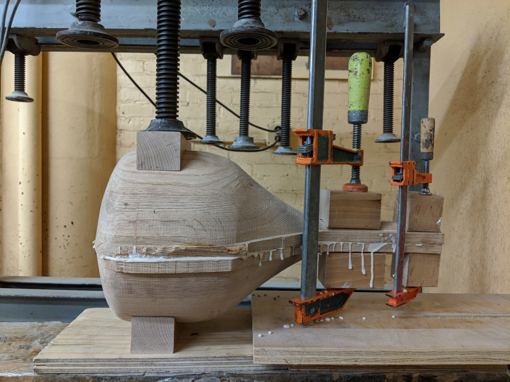
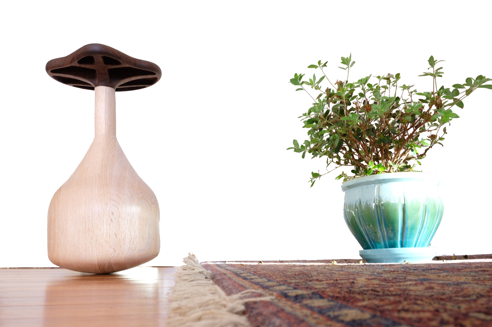
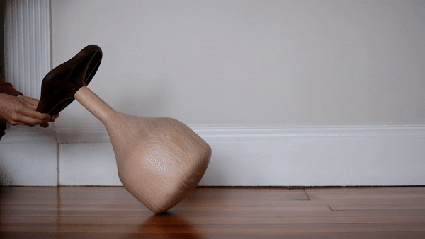

A stool sits closer to the ground than an ordinary chair. This lower center of mass means that it remains stable with only three legs. This design pushes the defining characteristic of stool even further ... can we find stability on just one leg? The answer is yes; with an upper core of foam and a bottom of lead, this stool's center of mass falls below the radius of curvature of its one leg: it is (under normal loading) therefore wobbly but quite untopable. A leg to stand on indeed!